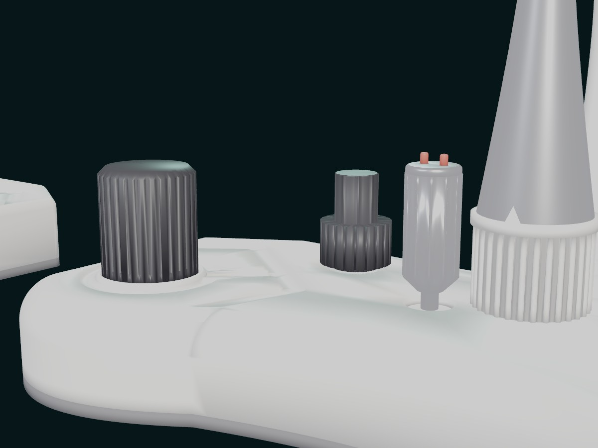

Train the hands before the hands touch the lab.
TrainICSI is an advanced micromanipulation simulation system designed to accelerate practical learning in clinical embryology — from ICSI and embryo biopsy to the fine controls that make micromanipulation possible.
Clinical embryology is hands-on. So why is so much of the training observational?
Many aspiring embryologists spend a long time watching before they get sufficient hands-on exposure. That isn't a failure of teaching — it's a consequence of how scarce the resources are.
What if practical learning didn't have to wait for the laboratory?
- Limited access to microscope and micromanipulator setups
- Dependence on biological sample availability
- Consumable cost attached to every repeated attempt
- Trainer availability for one-to-one supervision
- Understandable caution about beginners on costly equipment
- Difficulty giving large cohorts repeated practice
Meet TrainICSI. A new way to practice micromanipulation.
TrainICSI combines physical controls with a simulated microscopic environment, so practice no longer depends on a biological sample being available that day. What you're looking at is the real control hardware, rendered from the CAD model — the workstation also includes a dedicated microscope simulator, covered further down.
From physical control to measured improvement.
Every session runs the same loop. The numbering here is a real sequence, not decoration.
Control
The trainee operates physical controls similar to those on a micromanipulation workstation.
Simulate
Those movements are translated into the TrainICSI simulated microscopic environment.
See
The trainee views the simulated microenvironment through the microscope simulator.
Practice
Procedures are repeated to build precision, hand-eye coordination and muscle memory.
Analyse
Important interactions are tracked and measured against configurable parameters.
Improve
The system surfaces insights and recommendations that shape the next session.
Controls that correspond to the workstation.
Designed to replicate the control experience and hand-eye coordination demands of micromanipulation. Hover or tap a marker to see what each control does.

- Coarse control dial — large-range positioning
- Fine adjustment knob — micron-scale control
- Status & calibration pins
- Pipette mount
The microscope isn't just a screen.
TrainICSI uses a dedicated physical microscope simulator built around the familiar act of looking through eyepieces — a more immersive way to train than learning the procedure on a conventional monitor.
One platform. Multiple micromanipulation procedures.
Module availability varies by release — ask us which are ready for your institution today.
ICSI
Intracytoplasmic sperm injection — positioning, immobilisation, injection, aspiration and withdrawal.
Embryo biopsy
Practice the coordination and sequencing an embryo biopsy demands.
Polar body biopsy
Approach, alignment and extraction technique in a simulated setting.
Laser-assisted hatching
Familiarisation with positioning and targeting for assisted hatching.
Micromanipulator adjustment
Set-up and calibration drills for the micromanipulator arms.
Alignment & needle positioning
Foundational drills for pipette alignment, needle positioning and fine control.
Three ways to practice.
Trainees move from assisted learning through to independent, assessment-ready practice.
Guided
Learn with assistance.Tools designed to help trainees understand and practice individual controls and procedural steps.
- Guided movement and control assistance
- Feedback as you work
- Progressive difficulty
- Fine-control and muscle-memory drills
Unguided
Practice without the training wheels.A more realistic workstation environment, with the guidance removed.
- Realistic, unassisted practice
- Independent operation
- Confidence building
- Assessment preparation
Tutorial
Break complex procedures into skills.The complete ICSI workflow, divided into steps so a trainee can drill the one they need.
Practice is useful. Measured practice is better.
TrainICSI tracks trainee interaction and analyses performance against configurable parameters, returning metrics, strengths and areas to work on after each session.
PERFORMANCE ACROSS SESSIONS — ILLUSTRATIVE
Illustrative interface. Metrics, thresholds and scoring are configurable per institution and are not final.
Make mistakes here. Learn from them before they matter in the lab.
The environment can identify training events and turn them into something a trainee can act on. TrainICSI is designed to help build the foundational control, coordination and procedural familiarity micromanipulation requires — it does not certify clinical competence.
- 00:02:14Needle approach within toleranceLOGGED
- 00:04:41Excessive aspiration pressureFLAGGED
- 00:07:02Realignment — improved trajectoryLOGGED
- 00:09:58Inefficient movement pathFLAGGED
- 00:11:06Needle-breaking eventFLAGGED
- 00:12:20Withdrawal — clean releaseLOGGED
Illustrative event log. Names and data throughout this site are fictional.
Every session, in context.
Practice data can be associated with individual trainees and reviewed cumulatively across a whole training programme.
Trainer dashboard
Individual performance, cumulative progress, session history, comparative progress across a cohort, areas needing attention, assessment data and training analytics.
Student dashboard
Personal progress, practice history, improvement over time, AI-assisted analysis of sessions and recommendations on what to drill next.
Train more people. Without multiplying your laboratory setup.
Designed to create a measurable, repeatable environment for skill development — one that can reduce dependence on samples, consumables and constant one-to-one supervision.
Scale
Train larger cohorts within the same laboratory footprint.
Standardise
Give every trainee a consistent practice environment.
Measure
Track progress against defined, configurable parameters.
Assess
Use performance data as an additional practical assessment input.
Protect
Let beginners build fundamentals before touching valuable resources.
Repeat
Give trainees room to practice as many times as they need.
An evolution of the existing training ecosystem.
TrainICSI is built to sit alongside laboratory training, not to replace it — relieving pressure on the scarcest resources.
TRADITIONAL CONSTRAINTS
- Limited practice time
- Dependent on biological samples
- Ongoing consumable cost
- Equipment availability
- Trainer availability
- Difficult to scale
- Limited measurable data
SIMULATION-ENABLED TRAINING
- Repeatable practice
- No biological sample required for simulation sessions
- Reduced consumable dependence
- Dedicated training environment
- Guided learning built in
- Scalable across cohorts
- Trackable, reviewable performance
Don't just watch the procedure. Practice the movements.
Hand-eye coordination, fine motor control, spatial understanding and instrument familiarity are built through repetition, not observation. Confidence and procedural sequencing follow the same path. Everything TrainICSI does is in service of one shift: from observation to deliberate practice.
From the field.
A small number of voices, chosen for who they are rather than how many there are.
From the lab to the community.
TrainICSI is the beginning. The vision is much bigger.
Shreeji MedTech's roadmap looks across the clinical embryology workflow — not training alone.
Cryo simulation
Simulation and training around freezing and thawing workflows.
Lab procedure records
Technology-assisted laboratory procedure recording and traceability.
RFID-based workflows
Systems inspired by modern witnessing and identity-traceability approaches.
Make India a global leader in clinical embryology.
The ambition is to help develop thousands of highly trained clinical embryologists by combining advanced training technology with expert-led programmes and institutional collaboration — an ecosystem offering practical exposure, structured training, measurable learning and repeated practice. Better training in India can create better outcomes for the field globally.
Building the future of embryology takes a community.
We would be happy to collaborate with institutions, embryologists, educators, fertility centres, technology partners and organisations that share our vision of advancing clinical embryology through technology and practical education.
Leading the initiative.
Biography to be added.
Biography to be added.
Let's build better training together.
We usually reply within two to three working days.